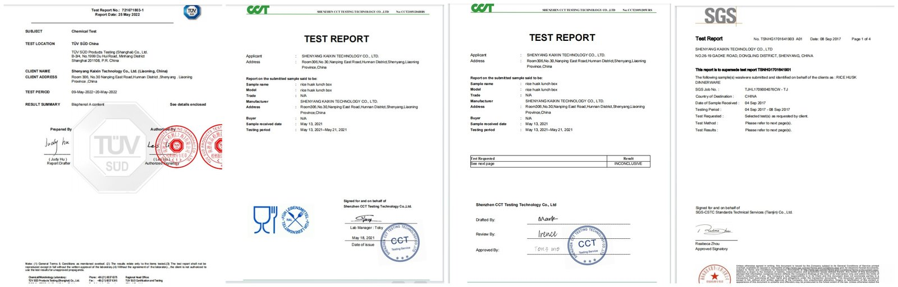
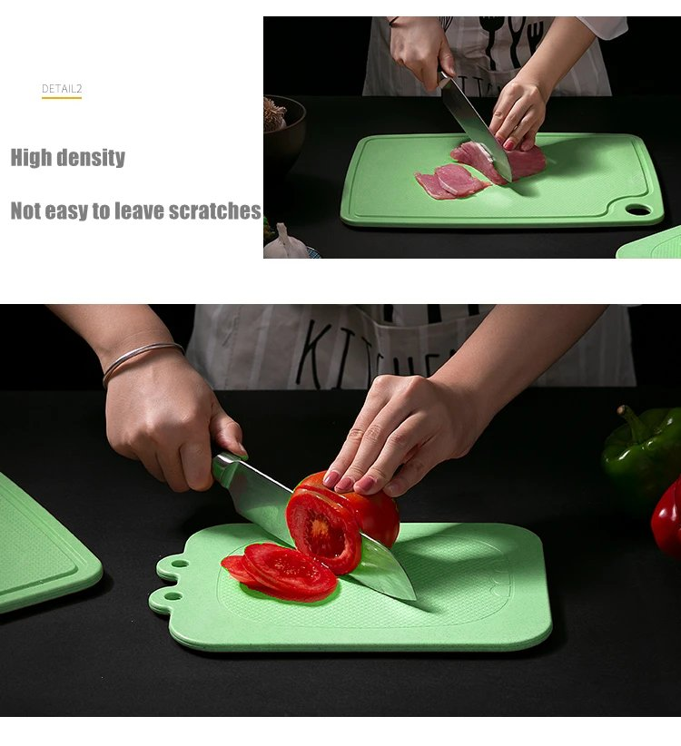

If you want the material itself explained first — what it is made of and what it tolerates — start with the material and safety guide. Below is the documentation side. Most buyers in this category have received a certificate JPEG and been told it means food safe. It usually does not. This page sets out the documents we can hand you, what each one actually proves, how to read a test report line by line, and what our plant checks on every run.

Every line below comes with the actual document — report number, testing lab, sample description and date. Ask for any of them with your quotation.
| Document | Status | What it covers |
|---|---|---|
| SGS food-contact test report | On file | Migration testing on the rice husk material. Sent as the full report, not a cropped summary page. |
| LFGB test report | On file | German Food and Feed Code food-contact testing, for EU-bound orders. |
| REACH compliance statement | On file | EU chemical regulation, including SVHC screening on the finished article. |
| MSDS (material safety data sheet) | On file | Composition, handling and storage data for your import file. |
| BPA-free and melamine-free declaration | On file | Written declaration plus the supporting test data behind it. |
| TÜV / CCT chemical test report | On file | Independent chemical testing on selected items in the range. |
| Formaldehyde migration test | On file | Migration result recorded against the food-contact limit. |
| ISO 14001 | Certified | Environmental management system certificate for the plant. |
| German packaging registration (VerpackG / LUCID) | Registered | Required to sell into Germany. Registration number supplied on request. |
| Testing to your market standard | Supported | If your market needs a standard we have not run yet, we send samples to a third-party lab you nominate. Cost and lead time are quoted before you commit. |
| Batch-level test report per shipment | On request | Arranged through a third-party lab at your cost; lead time confirmed before you commit. |
| Third-party factory inspection | Accepted | Your team or an agency you appoint. Access, records and loading photos provided. |
Tell us the destination market with your enquiry and we will send the set that applies to it. If your market enforces a standard that is not on this list, we will tell you what it takes to run the test rather than talk around it — better to hear that at quotation than at the port.
Ask for the PDF with every page. A one-page summary or a photo of a folder is not a report, and the page that matters is usually the one with the results table.
It must name the material and the item tested. A report for "plant fiber sample" cannot be used to defend a shipment of a different color or a different thickness.
Every result line should cite the standard or regulation and its year. A standard quoted without a version cannot be compared to the one your market enforces.
Material formulations change quietly. A 2019 report on a 2026 product is a decoration, which is why we re-test rather than re-send.
"Pass" only means the measured value sat under the limit. Ask what the measured value was and what the limit is: a result at 80% of the limit and a result at 5% of the limit both read "pass", and they are not the same product. This is also the question most suppliers cannot answer, because they never opened the report.
A material test report and a production quality system answer different questions. The report says the recipe is safe. These checks decide whether the carton you open matches the sample you approved.

The plain-language care sheet we ship with every order, and the answers to the questions buyers' own customers ask them.
| Topic | The reality |
|---|---|
| Temperature window | −30°C to 120°C in normal service. Not for open flame, ovens or stovetops — same as most plant-fiber and wood tableware. |
| Dishwasher | Home dishwashers on a normal cycle, yes. Industrial dish machines — tunnel, conveyor or rack units washing at 60°C and above with high-alkaline detergent — are not recommended for this material: the heat and chemistry dull the surface and shorten service life. High-volume kitchens should plan a hand-wash station, and tell us the setup before a large rollout. |
| Microwave | Short reheating on low power (3–5 minutes) is fine. Not for defrosting, not for long runs, and never run empty. |
| Service life | With normal use, three to four years of daily service is typical — which is where the cost math against disposables comes from. |
| The sheen | The surface gloss is a natural rice-bran wax formed during hot pressing. It softens gradually with use; that is the material aging, not a coating failing. |
| Dark specks | Small dark flecks in the surface are natural husk fiber, not defects. They are the visual signature of the material. |
| Staining and soaking | Natural fiber takes color over long contact, so rinse dark foods out rather than storing them. Daily washing and soaking are fine; do not leave pieces submerged for days. |
| Step | How it works |
|---|---|
| Appoint the agency | SGS, BV, TÜV, Intertek or a local agent — your choice, your contract. We do not steer buyers toward an inspector. |
| Tell us the date | Give us three working days' notice so the lot is staged and the paperwork is ready when the inspector arrives. |
| Define the scope | AQL level, checkpoints and any measurement you want recorded. Send the checklist; we would rather exceed it than guess it. |
| Attend or delegate | You can join by video, send your own QC, or rely on the agency report. All three happen regularly. |
| Fix and re-check | If the inspection finds defects, we show the corrective action and the re-inspection result. Failed lots do not ship. |
You are inspecting the plant you are actually buying from — the presses, the batch records and the loading bay, not a showroom. Appoint the agency, send the checklist, and we stage the lot before they arrive.
| Question | Answer |
|---|---|
| Is rice husk tableware food safe? | Our material is SGS tested for food contact. The product contains no BPA, no melamine and no plastic resin; the binder is food-grade starch. Ask us for the full report and read it with the five checks above. |
| Can you send a certificate? | We send the test report. A certificate describes an audited system; a report describes a measured sample. For food contact, the report is the document your buyer needs. |
| Do you test every batch? | Every run gets in-process checks on weight, dimensions, surface and drop resistance. The SGS report covers the material. Batch-level third-party testing can be arranged at your cost. |
| Is it dishwasher safe? | In a home dishwasher on a normal cycle, yes, and it washes easily by hand. Industrial dish machines run much hotter with stronger detergent, and this material is not specified for them — if your kitchen runs one, tell us before you commit and we will confirm whether a different material is the better fit. |
| Can you test to our market's standard? | Yes. The reports above cover the requirements most of our EU, UK and North American buyers work to. Where your market needs something different, we send samples to a third-party lab you nominate and quote the cost and lead time before you commit. |
Tell us the item and the destination market. We send the documentation that applies, and if your market needs a test we have not run, we tell you what it takes to run it.